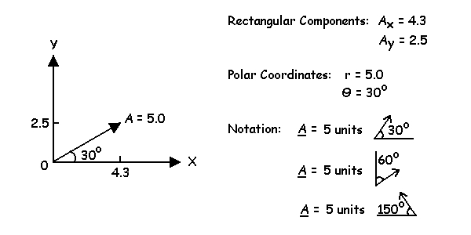

Rectangular Components of Vectors
It is important to have a coordinate system that allows a clear definition of each vector. In biomechanics, we most often use an X-Y axis system and rectangular components or polar coordinates. In this course, we will use a "righthand axis system" in which the positive X axis points to the right and the positive Y axis points directly upward. The figure below shows this axis system and typical descriptions of a point in space or the direction and magnitude of a vector.
